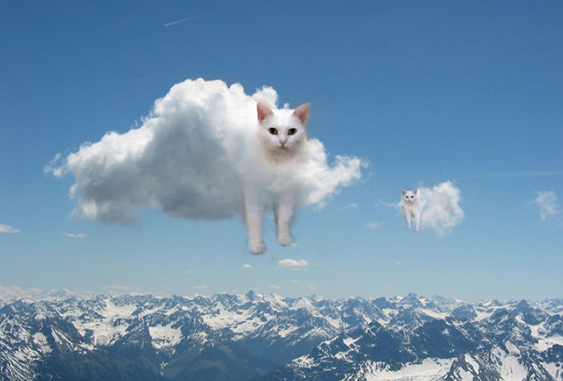

Основано на реальных событиях
Первый день его путешествия, кот по имени "Снежинка" взял всё необходимое для путешествия:
Я тучка, тучка, тучка, я вовсе не медведь,
А как приятно тучке по небу лететь.
А в синем, синем небе порядок и уют,
Поэтому все тучки, так весело поют.
Охх за прошедшее время, от начала путешествия кот по имени "Снежинка" проделал большой путь от своего дома,
он встретился с одной ведьмой которая жила в пряничном домике и заколдовала его, прекрасный кот
по имени "Снежинка" превратился в самое настоящее белое облачко! ВАААУ!
Путешествовать в виде облачка оказалось ещё увлекательнее и интереснее, превосходный кот по имени "Снежинка"
повидал много красивых мест и рыбов, наконец он решил передохнуть и выпал снежком в свою кроватку полежать.
Как говорится Вот и сказочки конец, а кто слушал - ляг поспи